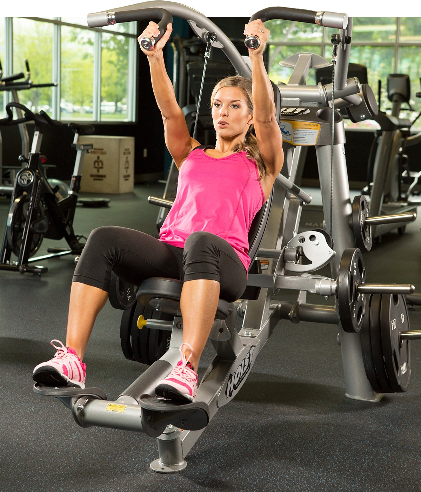

Don't get me wrong—I love free weights as much as the next guy. Maybe more. Barbell and dumbbell work can and will pack slabs of meat on your chest, but it's a mistake to ignore the awesome pec-building benefits of machines. Why? For one, they can allow you to go to failure repeatedly, and more safely, than free weights. You can also more easily swap weights in and out, allowing you to fully take advantage of advanced techniques like dropsets, forced reps, and slow negatives—all from a variety of angles.
The best part? You don't have to pick just one. You can do a heavy free weight strength day and then a growth-focused machine day later in the week, or just hit the weights first and then wring out every last bit of energy on these four machines! Add any of them to your pec plan and reach that next level of development.
1. ISO Incline Press
There are two basic principles you should know right out of the gate:
- Your upper chest can never be too developed.
- If you want to maximize growth, each side needs special attention.
You can take care of both of those needs with the ISO incline press. This machine places emphasis on the upper pecs, helping you develop a shelf-like effect. Because it has two independent handles, you can also focus extra attention on your weaker side and bring it up to the same level as your dominant side.

Don't neglect your stronger side—just knock out an extra few reps for the side that needs some love, and watch those puppies grow!
Tip: Try one-armed presses. Press both handles out, and keep your left arm extended while performing 8-10 reps with the right. Then switch.
2. Pec-Deck
When you perform a rep, you should contract the muscle, then stretch it through its full range of motion. The pec-deck delivers that deep stretch in every fiber of the pecs so you can make room for more blood in those muscles. When you contract, the pec-deck allows you to isolate the chest and squeeze those muscles hard to really maximize that pump.

Tip: Try dropsets. Go to failure in 12-15 reps, drop the weight by 20 percent, then go to failure again. And maybe again.
3. Seated Chest Press
The seated chest press is a great substitute for the flat bench because it targets the same area but allows you to isolate the chest and minimize recruitment of the delts. If the machine in your gym has both vertical and horizontal handles, use each for 2 sets to target different angles in the chest.
Tip: Try going heavy! If your shoulders don't like benching or there's a line at the stations, try doing 5 sets of 5 with the heaviest weight you can handle.
4. Cable Cross-over Station
The cross-over station is so versatile—how could we not include it?! Most gyms have adjustable pulleys so you can attack the pecs from every direction. Even if your gym only has the old-school upper and lower pulleys, you can still make the most out of what this machine has to offer. Whether it's cross-overs from either position or cable flyes on a bench, the cable cross-over offers the full stretch benefits of the pec-deck and the chest isolating advantage of the seated press. You'd be doing yourself a huge disservice to ignore this colossal chest builder!

Tip: Try high-to-low, low-to-high, right in the middle, even single-sided—try it all! Go relatively light, boost the reps up to 15 or more, and finish your workout with every fiber screaming!